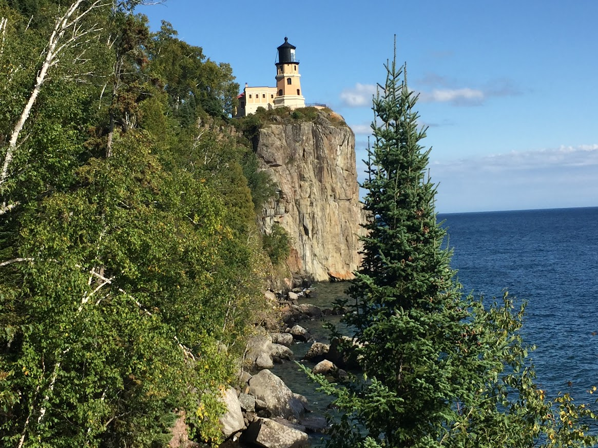

How an unprecedented storm on Lake Superior lead to emergence of a classic North American lighthouse
The Mataafa Storm
The Mataafa Storm of 1905 was a powerful storm that struck the Great Lakes on November 27‐28, 1905. The storm caused widespread damage, including the sinking or stranding of 29 ships and the deaths of 36 sailors. The storm developed in the Great Basin on November 26, and then moved east-northeastward across the Great Lakes on November 28. The storm brought strong winds, heavy snow, and high waves. The winds reached speeds of up to 100 miles per hour, and the waves reached heights of up to 30 feet.
The storm's most famous victim was the steamer Mataafa, which was carrying a load of iron ore when it was caught in the storm. The Mataafa broke in half and sank off the coast of Duluth, Minnesota. Nine of the Mataafa's crew members were killed.
The Mataafa Storm was a major disaster, but it also led to important changes in maritime safety. The storm's aftermath led to the construction of Split Rock Lighthouse, which was designed to help ships navigate the treacherous waters of Lake Superior. The storm also led to the development of new weather forecasting techniques, which helped to prevent future disasters.
The storm caused an estimated $3.5 million in damages in 1905 dollars. Adjust for inflation that amount comes to just above $110 million in 2023.
The storm's winds were the strongest ever recorded on Lake Superior.
The storm's waves were the highest ever recorded on Lake Superior.
The storm's winds and waves caused extensive damage to shoreline property, forests, and wildlife.
The SS Mataafa, broken in two and stranded on the South Pier at the entrance of Duluth, met a tragic fate in the November 1905 storm. Of her 24 crew members, 15 were rescued by the Life Savers Station the following morning, but 9 perished in the stern due to the elements.
Split Rock Lighthouse
Split Rock Lighthouse is a lighthouse located on the North Shore of Lake Superior in Minnesota. It was built in 1910 in response to the great loss of ships during the Mataafa Storm of 1905. The lighthouse stands on a 133-foot sheer cliff overlooking Great Lake Superior. The lighthouse was designed by lighthouse engineer Ralph Russell Tinkham and was completed in 1910 by the United States Lighthouse Service for $75,000, including the buildings and the land.
Split Rock Lighthouse was designated a National Historic Landmark in 1964 and is now operated by the Minnesota Historical Society as a museum. The lighthouse is one of the most popular tourist destinations in Minnesota, attracting over 200,000 visitors each year.

The octagonal building is a sturdy structure made of steel, brick, and concrete. The steel frame provides strength and stability, the brick walls provide fire resistance, and the concrete trim and foundation protect the building from the elements. The building is set into the rock of the cliff, providing it with a solid foundation and a commanding view of the surrounding area.
How the Lighthouse Evolved Over the Years
Split Rock Lighthouse was originally powered by kerosene lamps. The lamps were located in the lantern room at the top of the lighthouse. The lamps were lit every night and were extinguished every morning. The keeper was responsible for keeping the lamps lit and for refilling them with kerosene.
In 1927, the lighthouse was converted to electric power. The electric power was provided by a hydroelectric plant located on the nearby Beaver River. The electric power was used to power the lighthouse's fog signal, its beacon, and its keeper's quarters.
The lighthouse was further modernized in 1933 when it was automated. The automation process involved the installation of a new fog signal, a new beacon, and a new lens. The new fog signal was a diaphone, which is a type of foghorn that produces a loud, deep sound. The new beacon was a 3rd order Fresnel lens, which is a type of lens that produces a powerful beam of light. The new lens was made of glass and was much larger than the original kerosene lamps.
The lighthouse's fog signal is one of the loudest in the world, with a range of over 20 miles.
The lighthouse's lens comes in at 10 feet tall and weighs 4 tons.
The automation of Split Rock Lighthouse made it the first lighthouse on the Great Lakes to be operated without a human keeper. The automation process was a major technological advancement that helped to improve the safety of navigation on Lake Superior.
Summary of Different Lighthouse Power Sources
Power Source
Date Introduced
Notes
Kerosene Lamps
1910
Original power source
Electric Power
1927
Lighthouse converted to electric power
Automated
1933
Lighthouse became the first on the Great Lakes to be operated without a human keeper
The Split Rock Lighthouse beacon lighting up the evening sky.The lens that powers Split Rock Lighthouse is 10-feet tall and weighs approximately 8,000 pounds